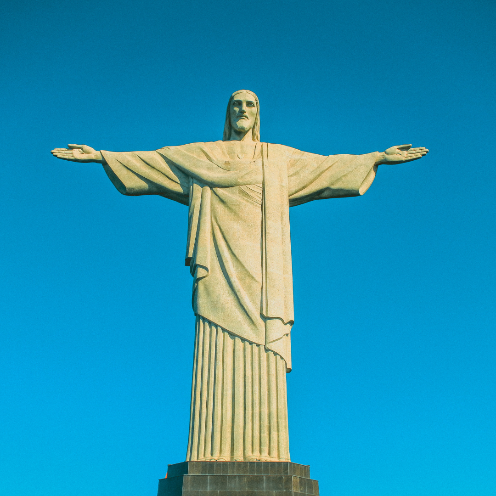

que eu mais gosto em Santa Cruz - Rio De Janeiro
➱ Visitar Monumento Do Cristo Redentor
Imagine só: lá no alto, dominando a paisagem do Rio de Janeiro, está o Cristo Redentor. Não é só uma estátua; é um ícone, uma daquelas coisas que a gente vê e pensa: "Nossa, eu realmente estou no Rio!" De braços abertos, ele parece abraçar a cidade inteira, um verdadeiro símbolo de paz e acolhimento. Localizado no topo do Morro do Corcovado, a uns 710 metros de altura, essa beleza de Art Déco tem impressionantes 38 metros de altura (com o pedestal). Inaugurada em 1931, a estátua foi uma colaboração incrível, com um engenheiro brasileiro, Heitor da Silva Costa, no projeto, e a escultura do francês Paul Landowski e do romeno Gheorghe Leonida. A obra demorou um tempão para ficar pronta – nove anos! – e o mais legal é que foi tudo financiado por doações do povo brasileiro. É algo feito com carinho, sabe?
O Cristo Redentor e sempre alvo de muitos turista e as vezes podem ficar perdido. Como Me Localizar? Mapa 🗺️
➱ Conhecer O Incrivel Pão de Açúcar
Subir no Pão de Açúcar é uma experiência inesquecível. Com seus dois morros (Urca e Pão de Açúcar) conectados por bondinhos, o passeio oferece vistas panorâmicas espetaculares da Baía de Guanabara, das praias, do Cristo Redentor e da cidade. É especialmente lindo no pôr do sol, quando o céu e o mar ganham tons vibrantes.
O Pão de Açúca e um lugar muito belo E admiravel para ser visitar. Veja - Mapa 🗺️
➱ Jardim Botânico do Rio de Janeiro

O Jardim Botânico do Rio de Janeiro é um oásis de tranquilidade e beleza no coração da cidade, ideal para um passeio relaxante. Fundado em 1808, ele abriga uma vasta e impressionante coleção de plantas de todo o mundo. Ao explorar seus caminhos, você vai se encantar com as grandiosas Palmeiras Imperiais, que formam uma alameda majestosa. Não deixe de visitar o Orquidário e o Bromeliário, com suas coleções vibrantes, e as gigantescas Vitórias-Régias em seu lago sereno. É o lugar perfeito para fugir do agito da cidade, apreciar a biodiversidade e desfrutar de um momento de paz em meio à natureza exuberante.
Pode ser um lugar dificil de se localizar então sempre fique atentento. Veja - Mapa 🗺️
E existe muitos outros lugares interresantes na cidade...
- Praia de Copacabana Famosa em todo o mundo, a Praia de Copacabana é perfeita para um dia de sol, caminhadas na orla, ou simplesmente para observar o movimento e aproveitar a atmosfera vibrante.
- Praia de Ipanema Vizinha de Copacabana, a Praia de Ipanema é conhecida por sua beleza natural, o calçadão charmoso e o pôr do sol espetacular no Arpoador.
- Escadaria Selarón Uma obra de arte a céu aberto, essa escadaria colorida no bairro da Lapa foi criada pelo artista chileno Jorge Selarón e é um verdadeiro mosaico de azulejos de diversas partes do mundo.
- Jardim Botânico Um oásis de tranquilidade e beleza, o Jardim Botânico abriga uma vasta coleção de plantas tropicais, palmeiras imperiais, orquidário e um belíssimo lago com vitórias-régias.
- Lapa e Arcos da Lapa A Lapa é o coração da vida noturna carioca, com seus bares, casas de show e o famoso Aqueduto da Carioca (Arcos da Lapa), que é um marco histórico da cidade.